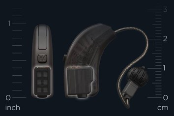

Cargador universal para portátiles
La compañía Energysquare ha desarrollado un cargador inalámbrico universal para
ordenadores portátiles. Para ello, se han basado en Power by contact, su tecnología
de carga conductora patentada. Una carga rápida y potente sin ondas electromagnéticas.
PLOTT
PLOTT ha sido el vencedor en la categoría ”Realidad Virtual/ Realidad Aumentada”. Esta
plataforma permite diseñar en Realidad Aumentada con dimensiones y vídeos del mundo real.
Esta característica convierte a PLOTT en ideal para tareas de bricolaje. De este modo, el
usuario puede ver cómo quedaría algo nuevo en su salón sin necesidad de hacer cambios en
la vida real.
Una vez decidas los cambios a realizar, PLOTT cuenta con hardware para llevarlo a la realidad
paso a paso y eliminando la necesidad de realizar cálculos matemáticos.
Insta360 Pro 2
El triunfador de la categoría ”Fotografía digital y Fotografía” ha sido Insta 360
Pro 2. Hablamos de una cámara All-in-One capaz de grabar en 8K 3D VR. También integra
un sistema de monitoreo en vivo FarSight de 360 grados y tecnología de estabilización
FlowState.
ZOMEKit

ZOMEKit es un dispositivo que convierte los complejos de apartamentos en edificios
inteligentes. Este producto logra ahorrar energía e incluso producir ingresos.
ZOMEKit transforma los termostatos y aparatos en dispositivos de energía transactiva.
El primer audífono sin batería

La nueva tecnología Widex Energy Cell ha dado lugar a la creación del primer audífono
sin batería del mundo. Desde Widex aseguran que emplean la celda de combustible más
pequeña del mundo disponible comercialmente. Así, el usuario puede energizar sus
audífonos en tan solo 20 segundos y sin necesidad de cables o baterías. La autonomía
es de 24 horas y también se ofrece un audio de excelente calidad.
Lenovo Yoga Book C930
En ”Hardware y componentes para ordenadores”, el Lenovo Yoga Book C930 ha sido el vencedor.
Éste es el primer portátil de pantalla dual del mundo con E Ink que se convierte en un
teclado dinámico y personalizable con solo tocar un botón. El dispositivo es delgado y
liviano; además de potente y con gran autonomía.
Leica BLK3D
El Leica BLK3D es un dispositivo que logra crear imágenes en 3D con mediciones
exactas de lo que fotografiamos. Lo mejor de todo es que lo hace al instante,
por lo que está enfocado a sectores como el de la ingeniería o la arquitectura.
Además, las capturas se pueden compartir de una manera sencilla.
El primer asistente auditivo del mundo

KAIZN es el primer asistente personal de IA del mundo que se centra en la audición.
Éste aprende constantemente sobre los comportamientos y necesidades de audición;
además de las preferencias de sonido de los usuarios. Con el paso del tiempo será
capaz de optimizar automáticamente la configuración del sonido que más se ajuste
a cada usuario.
Conducción autónoma de WHILL
WHILL ha logrado alzarse como vencedor de la categoría ”Accesibilidad”. En este sentido,
la compañía cuenta con vehículos personales autónomos; una especie de silla de ruedas,
pero que es capaz de conducirse a sí misma. Así, se logra facilitar la vida a personas
con discapacidades que dificultan su movilidad.
Los vehículos personales autónomos de WHILL están pensados para utilizarse como MaaS o
movilidad como servicio. En este sentido, la empresa piensa que los hospitales,
aeropuertos, museos o centros comerciales son los lugares idóneos para su uso.
Click aquí para ver más...